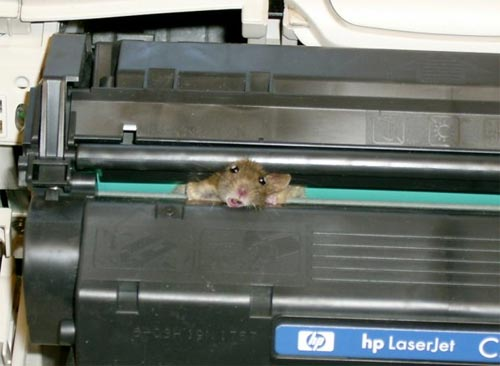
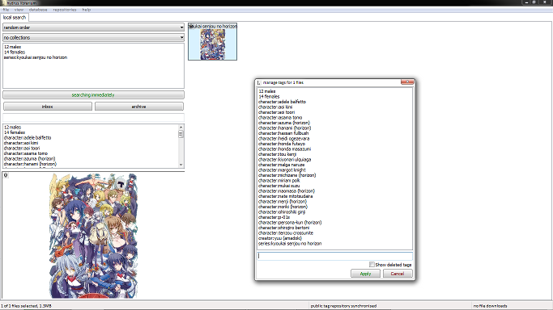

This is for the public tag repository only! You can run your own tag repositories and do your own thing additionally or instead!
seriousness of schema
Whenever many people contribute to a large whole, a rough schema is useful. But it is not the most important thing in the world for it to be upheld absolutely; it will just make searches easier if most of us can mostly agree to some guidelines.
The most important thing is: if your tag idea is opinion, don't add it to my repo. 'beautiful' is not a great tag since no one can agree on what it means. 'giant breasts' is an ok tag since many reasonable people can agree (within certain loose parameters) on what it means. 'f-cup' is a great tag (assuming it is accurate, and not a wild guess) since you can verify it; it is either true about a picture or not. If you think f-cup breasts are beautiful and you want to see something beautiful, you can add 'f-cup' to your query. When a particular search term becomes popular, I can alter the client to understand more intelligent queries, like '>c-cup' or '<=b-cup'.
As with all rulesets, it is very possible to go too far. We will never be able to easily and perfectly categorise every single image to everyone's satisfaction, so there is no point defining every possible rule for every possible situation. This is especially true for namespaces. So lower any autismal expectations you might have and just start tagging. Fixing mistakes is not difficult.
Just like JIT production flows, editing wikipedia articles, and the holy doctrine of self-flagellation, this is a process, not a destination.
you can add pretty much whatever the hell you want, but don't screw around
You can't prefix a tag with a '-' or 'system:' for obvious reasons, but tag repositories will accept anything else utf-8. You can start your own namespaces, categorisation systems, whatever. Just be aware that everyone else with access to a tag repo will see what you do.
If you don't know the difference between objective and subjective, here's a refresher:
-
objective tags:
- firetruck
- hors d'œuvre
- high heels
- character:jean-luc picard
- title:the tragical history of hamlet, prince of denmark
- roger ebert:4 stars
- page:17
-
subjective tags:
- awesome
- faggot level:super-gay
- 4 stars
- this is boring, why did anyone upload this here
- moran communist and ONE TERM PRESIDENT!!! SARAH PALIN 2012! FOR JESUS CHRIST
numbers
Numbers should be written '22', '1457 ce', and 'page:3', unless as part of an official title like 'ocean's eleven'. When the client parses numbers, it does so intelligently, so just use '1' where you might before have done '01' or '001'. I know it looks ugly sometimes to have '2 girls' or '1 cup', but the rules for writing numbers out in full are hazy for special cases.
(Numbers as 123 are also readable by many different language-speakers, while 'tano', 'deux' and 'seven' are not.)
plurals
Nouns should generally be singular, not plural. 'chair' instead of 'chairs', 'female' instead of 'females', 'cat' instead of 'cats', even if there are several of the thing in the image. If there really are many of the thing in the image, add a seperate 'multiple', 'comparison' or 'group' tag as apppropriate.
An exception is when the thing is normally said in its plural (usually paired) form. Say 'blue eyes', not 'blue eye'; 'breasts', not 'breast'; 'pants' instead of 'pant'.
acronyms and synonyms and shortenings are a pain in the bum to keep track of
At a later date, it is planned for the client to support general synonyms, so inputting 'lotr' could return 'series:the lord of the rings', 'marimite' might return 'series:maria-sama ga miteru', and 'brangelina' would of course return 'person:brad pitt'+'person:angelia jolie'. Until then, please enter whatever you feel most comfortable with and don't go crazy with the petitions. If we end up with many surplus tags, we will sort it out when synonyms come in.
namespaces
A namespace is when you prefix a context: 'creator:range murata', 'series:futurama', 'title:what kind of day has it been', and so on.
The tags 'democratic', 'beck', and 'st. vincent' all have different meanings depending on context, so searches for these simple terms will often return unwanted results. Adding context also informs people who are ignorant of a work's author or title, especially when the tags are in a different language or cultural context. Anyone who has attempted to market (or just find!) a badly-named video game or movie through google has encountered these problems. Without namespaces, there can be confusion.
Prefixing a namespaced context where appropriate makes searching more powerful. I can also update the client to parse certain namespaces in different ways, to create clever search predicates, sort orders, collections, presentation rules, whatever. Our 'f-cup' example from above might be improved if it were 'bust:f-cup'.
BTW: All searches without a namespace will return all instances, namespaced or not, of that tag; a search for 'levar burton' will return everything with 'levar burton', 'creator:levar burton', 'person:levar burton', 'series:levar burton', 'offensive:levar burton', whatever. If you then want a specific version of 'levar burton' to narrow it down, use a namespace.
BTW Part 2, Electric Boogaloo: Nested namespaces do not work and will kill your dreams. Don't go with something crazy like 'militaries:united states:navy:marine corps:sgt. joe bloggs' as the client will parse that as (militaries):(united states:navy:marine corps:sgt. joe bloggs). Instead use a combination of 'nation:united states', 'usmc', 'person:joe bloggs', 'rank:sergeant' and so on.
Some basic namespaces:
-
series:
'series:the wire', 'series:star trek' and so on. For canon or fanon.
The client parses this, and lets you sort and collect appropriately. (Although it doesn't sort/collect multiple-series-per-file very well yet, so be careful on superset-subset series names (e.g. adding something like 'series:star trek' and 'series:star trek the next generation' to the same file) for now.)
-
creator:
Artists, writers, designers, inkers, production studios, whoever. If they had a substantial hands-on contribution in creating the work, they should get this namespace.
Maybe we can go finer, and do 'director:name' or 'actor:name' here. I am not sure if that makes it harder or easier to search. Maybe we should do both, so you can validly say 'show me everything person x has acted in' or 'show me everything person x has contributed to', I don't know. I suppose 'creator:' could be inferred, if we made an agreed-upon list of creator titles.
-
character:
A fictional character represented in the work. If they are only referenced (e.g. spoken of, but not visible), use your best judgment.
-
person:
A person who is in or whose likeness is in the work. If the person has a stage name, use this in preference of a real name.
-
title:
If the work has an official title, endorsed and promulgated by the creators, add it here. This namespace is not for a silly title you just thought of, nor is it for unofficial fan-art; your eagle!gandalfXvole!pippin/you self-insertion furry-vore-fanfic commision should get 'series:lord of the rings', not 'title:lord of the rings'. But if the 14-year-old DA artist you had vomit out the image named it 'the viscous ardour of the shire', it can and should get 'title:the viscous ardour of the shire'.
I figure this will be more useful when lib supports music, but w/e.
-
page:
chapter:
volume:
Meant primarily for manga and comics. Numerical-only, please. If an image spans more than one page, give it separate tags e.g. 'page:17' and 'page:18', not 'page:17-18'.
the client parses these, and lets you sort and collect appropriately.
-
examples
These are not supposed to be 100% perfect or 100% done, but just to get you thinking:
-

- person:ainsley harriott
- face
- looking away
- reaction image
-

Not sure if 'skyrim' should really be 'series:skyrim', but whatever.
- creator:bethesda softworks
- character:azura
- series:the elder scrolls
- daedra
- daedric lord
- skyrim
- concept art
- shrine
- statue
-
- that feel
- face
- i know that feel
- reaction image
-

I don't know if the mouse is cheerful and alive or dead of a broken neck, so I've left that judgment out.
- mouse
- printer
- hewlett-packard
-
I used to have an example from safebooru here, something obscure and japanese to show how helpful namespaces can be, but instead I'll put this:
Which someone else did and uploaded to my beta file repo. That is a five star effort.
-
{kind=link}